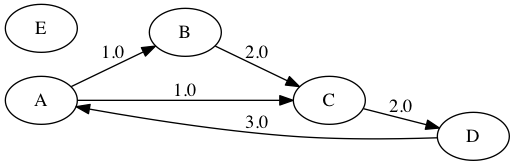
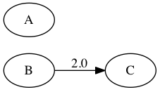

Graph Class¶
Graph Class
graph.Graph([edges, nodes]) |
Creates a graph with the specified vertices and edges |
Graph Class Methods
Construction Methods
graph.Graph.add_edges(edges) |
Adds edges to the graph. |
graph.Graph.add_nodes(nodes) |
Adds nodes to the graph. |
graph.Graph.new_projection(edge_map, node_map) |
Construct a new graph.Graph whose nodes are the values returned by applying the function node_map(node) -> new_node to each node; and whose edges are the values returned by applying the function edge_map(src_node,dst_node,edge_obj) -> new_edge_obj to each edge triple. |
graph.Graph.new_subgraph([edge_pred, node_pred]) |
Returns the maximal subgraph for which all nodes satisfy the node predicate and all edges satisfy the edge predicate. |
Local Graph Methods
graph.Graph.send_collect(emmiter, collector) |
Request each edge triple to emmit messages via the function emitter which will be delivered to its source and destination node where they will be processed by the function collector. |
graph.Graph.update_edges(updater) |
Apply the function updater(src_node,dst_node,edge_obj) to each edge triple, it should treat the source and destination objects, src_node and dst_node, as constant inputs. |
graph.Graph.update_nodes(updater) |
Apply the function updater(node) to each node. |
Query Methods
graph.Graph.nodes() |
Returns a set-like object containing the nodes in the graph. |
graph.Graph.find(motif) |
Returns all structure patterns found in the graph which match the given motif. |
Details¶
-
class
graph.Graph(edges=None, nodes=None)¶ Creates a graph with the specified vertices and edges
Parameters: - edges (iterable, optional) – An iterable which yields triples of the form
(src_node,dst_node,edge_obj)signifying a directed edge whose source issrc_nodeand whose destination isdst_node. The objectedge_objwill be attached to this edge (as a label). - nodes (set-like, optional) – A collection of (distinct) hashable objects.
Example
1 2 3
g = Graph(edges = [('A','B',1),('A','C',1), ('B','C',1),('C','D',1),('D','A',1)], nodes = {'E'})
produces the graph
g:- edges (iterable, optional) – An iterable which yields triples of the form
Construction Methods¶
-
Graph.add_edges(edges)¶ Adds edges to the graph. Any new source and destination nodes are also added.
Parameters: edges (iterable) – An iterable which yields triples of the form (src_node,dst_node,edge_obj)signifying a directed edge whose source issrc_nodeand whose destination isdst_node. The objectedge_objwill be attached to this edge (as a label).
-
Graph.add_nodes(nodes)¶ Adds nodes to the graph.
Parameters: nodes (set-like) – A collection of (distinct) hashable objects.
-
Graph.new_projection(edge_map, node_map)¶ Construct a new
graph.Graphwhose nodes are the values returned by applying the functionnode_map(node) -> new_nodeto each node; and whose edges are the values returned by applying the functionedge_map(src_node,dst_node,edge_obj) -> new_edge_objto each edge triple.Parameters: - node_map (function) –
This should be a function of the form
map(src_node,dst_node,edge_obj)which modifiesedge_obj, while treatingsrc_nodeanddst_nodeas constant. Any return values will be ignored.Parameters Description nodeThe input node Return Values new_nodeThe node created in the new graph - edge_map (function) –
This should be a function of the form
map(src_node,dst_node,edge_obj)which modifiesedge_obj, while treatingsrc_nodeanddst_nodeas constant. Any return values will be ignored.Parameters Description src_nodeThe node at the source of the edge dst_nodeThe node at the destination of the edge edge_objThe object attached to the edge Return Value new_edge_objThe object attached to the edge created in the new graph whose source node is node_map(src_node)and whose destination isnode_map(dst_node)
Returns: The new graph.
Return type: - node_map (function) –
-
Graph.new_subgraph(edge_pred=None, node_pred=None)¶ Returns the maximal subgraph for which all nodes satisfy the node predicate and all edges satisfy the edge predicate.
Parameters: - node_pred (function, optional) – This should be a function of one argument which returns a
bool. Ifnode_predis ommitted, then all nodes are included. - node_pred – This should be a function of one argument which returns a
bool. Ifedge_predis ommitted, all edges are included whose source and destination nodes satisfy the node predicate.
Returns: The maximal subgraph satisfying the given predicates.
Return type: Example
1 2 3 4 5 6
g = Graph(edges = [('A','B',1),('A','C',1), ('B','C',2),('C','D',2),('D','A',3)], nodes = {'E'}) edge_pred = (lambda src,dst,e: e==2) node_pred = (lambda node: node in {'A','B','C'}) h = g.subgraph(edge_pred = edge_pred,node_pred = node_pred)
produces the subgraph
h:of the graph
g:- node_pred (function, optional) – This should be a function of one argument which returns a
Local Graph Methods¶
-
Graph.send_collect(emmiter, collector)¶ - Request each edge triple to emmit messages via the function
emitter - which will be delivered to its source and destination node where they will be
processed by the function
collector.
Parameters: - emitter (function) –
This should be a function of the form:
emitter(src_node,dst_node,edge_obj) -> src_msg_iter,dst_msg_iterParameters Description src_nodethe source node dst_nodethe destination node edge_objthe object attached to the edge Return Values src_msg_iterAn iterator which yields messages delivered to the source node src_msg_iterAn iterator which yields messages delivered to the destination node - collector (function) –
This should be a function of the form
collector(node,msg_iter)which processes the messages inmsg_iterand modifiesnodeacordingly. Any return values will be ignored.Parameters Description nodeThe recipient node msg_iterAn iterator of messages addressed to the node
- Request each edge triple to emmit messages via the function
-
Graph.update_edges(updater)¶ Apply the function
updater(src_node,dst_node,edge_obj)to each edge triple, it should treat the source and destination objects,src_nodeanddst_node, as constant inputs.Parameters: updater (function) – This should be a function of the form
updater(src_node,dst_node,edge_obj)which modifiesedge_obj, while treatingsrc_nodeanddst_nodeas constant. Any return values will be ignored.Parameters Description src_nodeThe node at the source of the edge dst_nodeThe node at the destination of the edge edge_objThe object attached to the edge
-
Graph.update_nodes(updater)¶ Apply the function
updater(node)to each node.Parameters: updater (function) – This should be a function of the form
updater(node)which modifiesnode. Any return values will be ignored.Parameters Description nodeThe node to be modified
Query Methods¶
-
Graph.nodes()¶ Returns a set-like object containing the nodes in the graph. This can be chained after
graph.new_subgraphto form more complex queries.Returns: A set-like object containing the nodes in the graph. Return type: set-like
-
Graph.find(motif)¶ Returns all structure patterns found in the graph which match the given motif. This can be chained after
graph.new_subgraphto form more complex queries.Parameters: motif (string) – A semi-colon separated string of structural patterns of the form
(a)-[e]->(b). This structural pattern represents an edge where(a)and(b)represent the source and destination nodes (these can optionally be left blank) and[e]represents the object labeling the edge (it can optionally be left blank).Each of
a,b, andeare arbitrary substrings (they can optionally be left blank, and must not include the special characters()[]->), if they are not blank, they will be used as column labels in the returned DataFrame.Returns: - A DataFrame-like object whose columns are labelled by the distinct substrings
(a),(b),[e]found among the structural pattern parts of the motif (the parentheses()square brackets[]are included to distinguish columns representing edges and nodes).Each row corresponds to a valid assignment of the node labels
(a)and(b)to nodes in the graph, and edge labels[e]to edges in the graph, which is consistent with all the structural patterns in the motif. For example the motif(a)-[e1]->(b); (b)-[e2]->(c)would find pairs of edges fromatobtoc. Similarly, the motif(a)-[e1]->(b); (b)-[e2]->(a)would find pairs of nodesaandbconnected by edges in either direction.
Return type: DataFrame-like Example
Given the graph
g:the query
g.find("(a)-[e1]->(b); (b)-[e2]->(c)")returns(a) (b) [e1] (c) [e2] 0 A B 1 C 2 1 A C 1 D 2 2 B C 2 D 2 3 C D 2 A 3 4 D A 3 B 1 5 D A 3 C 1